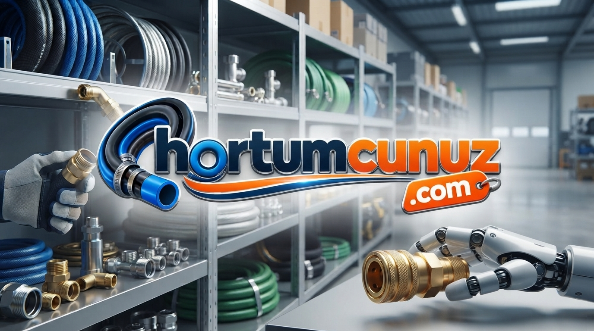

Radyatör ve Turba Hortumu
Ağır vasıta, sanayi makineleri ve otomotiv sektörü için birinci sınıf radyatör hortumu ve turba hortumu çeşitleri.
İzmit kauçuk ve sanayi ihtiyaçlarınız için radyatör hortumu, turba hortumu, fitil ve endüstriyel kauçuk ürünlerinde bölgenin en hızlı tedarikçisi.
Hemen Fiyat Teklifi Alınİzmit sanayi hortumcu ve fitilci arayışlarınızda yüksek dayanımlı endüstriyel ürün çeşitlerimiz
Ağır vasıta, sanayi makineleri ve otomotiv sektörü için birinci sınıf radyatör hortumu ve turba hortumu çeşitleri.
İzmit sanayi sitesi kauçukçu hizmetlerimiz kapsamında özel ölçü kesim kauçuk levha, conta ve endüstriyel yalıtım malzemeleri.
İzmit sanayi fitilci taleplerinize özel, yüksek sızdırmazlık sağlayan kauçuk fitil, silikon fitil ve özel profil çeşitleri.
Sektördeki köklü tecrübemizle, İzmit sanayi sitesi merkezli olmak üzere tüm Kocaeli bölgesine endüstriyel kauçuk ürünlerini, radyatör hortumu ve turba hortumu gibi kritik yedek parçaları en yüksek kalite standartlarında tedarik ediyoruz. Bölgenin en güvenilir izmit hortumcu ve izmit sanayi fitilci firması olarak işletmenizin çözüm ortağıyız.

İzmit sanayi sitesi şubemizden tüm radyatör hortumu, turba hortumu ve kauçuk tedarik talepleriniz için hemen bize ulaşın.
Konum: İzmit Sanayi Sitesi, 5. Cadde 404 Blok No: 7, İzmit / Kocaeli
E-posta: info@hortumcunuz.com
Telefon / WhatsApp: +90 (262) XXX XX XX
E-posta Gönder